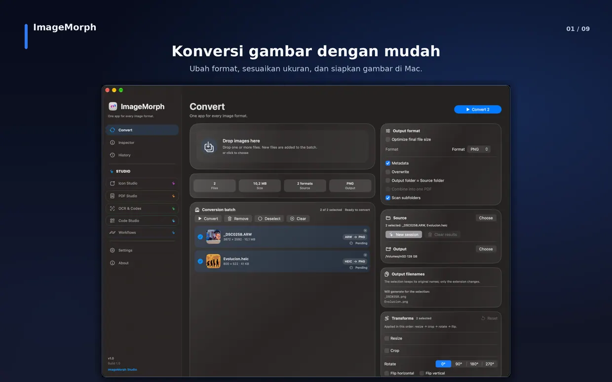
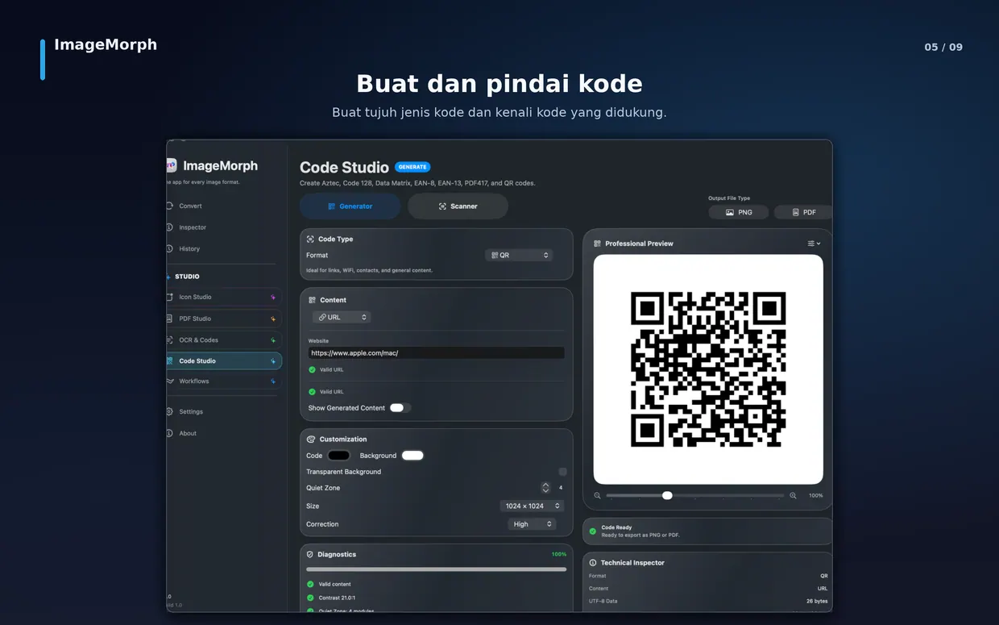
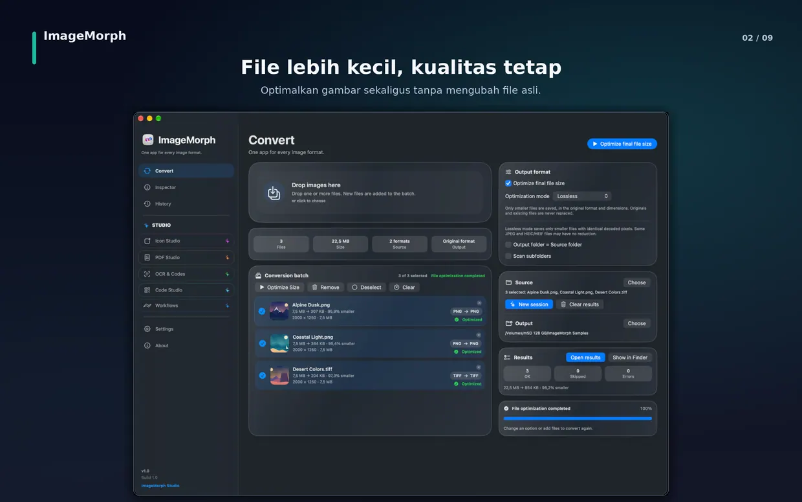
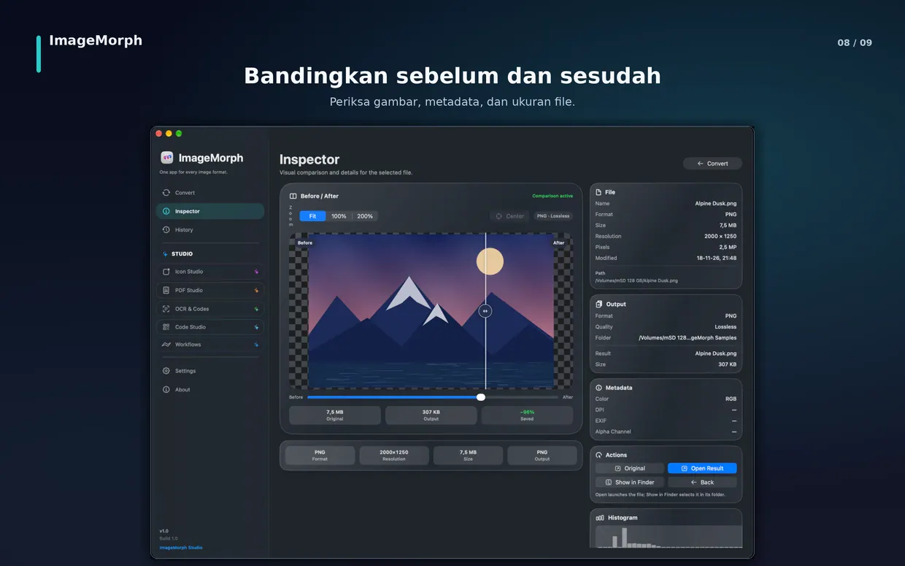
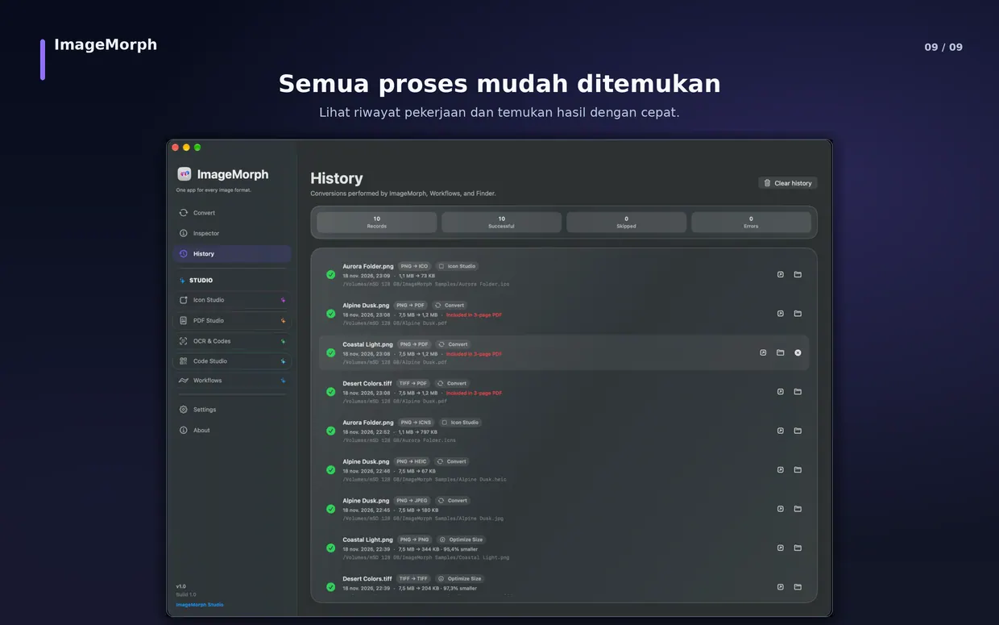
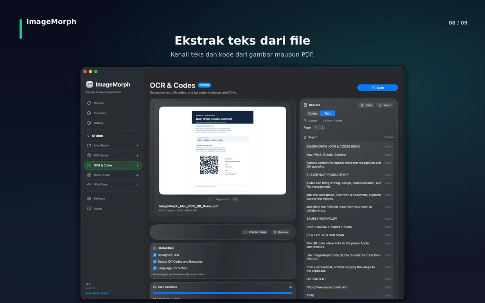
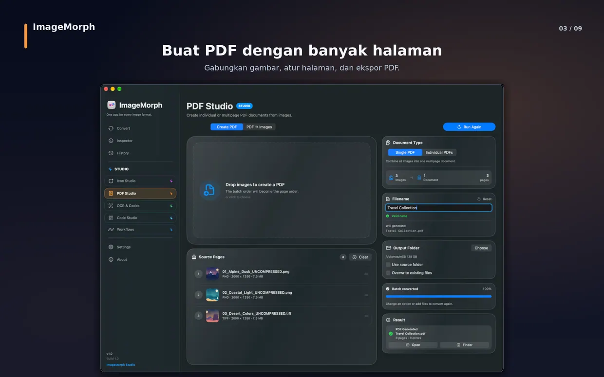
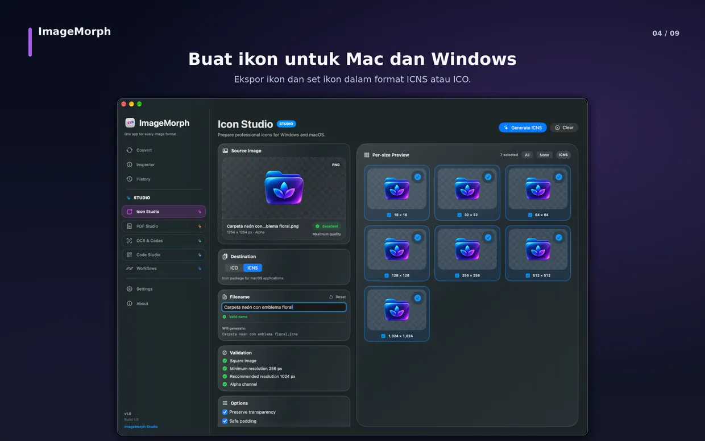
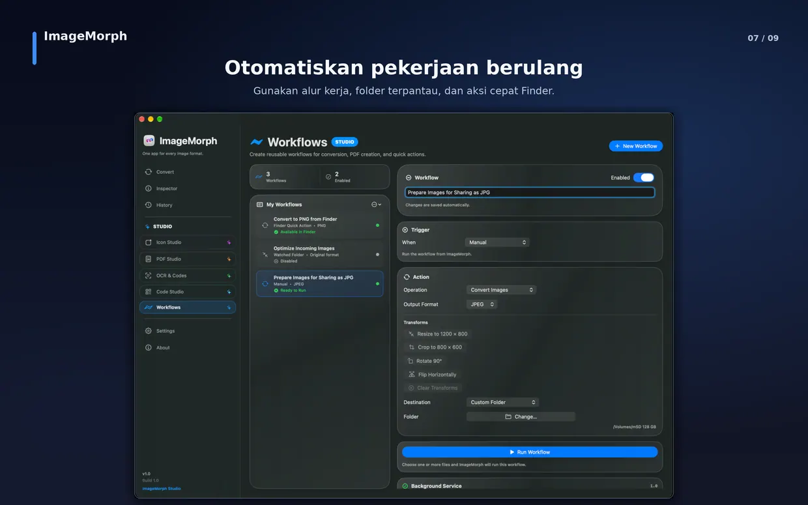

JPEG · PNG · HEIC · TIFF
Dukung JPEG, PNG, HEIC, dan TIFF per file atau sekaligus.

Konversi, ubah ukuran, dan optimalkan gambar. Buat PDF dan otomatisasi pekerjaan berulang di Mac.
Sedang disiapkan untuk Mac App Store.

Konversi, ubah ukuran, dan optimalkan gambar. Buat PDF dan otomatisasi pekerjaan berulang di Mac.

Kenali teks dari gambar dan PDF multipagina, tinjau lalu ekspor hasilnya.
Baca QR dari email atau PDF di Mac dan periksa alamat tujuannya sebelum membukanya.


Pratinjau URL tidak menjamin situs aman. Periksa domain dan jangan kirim data pribadi ke situs mencurigakan.
Jelajahi alat kodeDukung JPEG, PNG, HEIC, dan TIFF per file atau sekaligus.

Ubah dimensi dan proporsi gambar untuk berbagai kebutuhan dan pertahankan rasio aspek bila diperlukan.

Optimasi lossless atau lossy sesuai format; keluaran hanya jika lebih kecil.

Lihat format, dimensi, dan metadata. Setelah konversi, bandingkan hasil dengan aslinya.

Tinjau pekerjaan sebelumnya dan buka hasilnya atau tampilkan di Finder jika file masih tersedia.

Studio menghadirkan OCR, pemindaian kode, alat PDF, ikon, dan otomatisasi. Sekali beli, tanpa langganan.
Studio adalah pembelian dalam aplikasi permanen yang opsional.
Kenali teks dari gambar dan PDF multipagina, tinjau lalu ekspor hasilnya.


Baca kode dari papan klip, gambar, PDF, atau folder; tangkap juga dengan kamera dan pemindai yang kompatibel. Periksa tautan sebelum membukanya.


Buat PDF multipagina, ekspor halaman sebagai gambar dan atur rotasinya.

Buat file ICO dan ICNS serta periksa ukuran sebelum ekspor.


Buat QR, Code128, Data Matrix, EAN, PDF417, dan Aztec; ekspor PNG atau PDF.

Simpan alur kerja, pantau folder dan jalankan tindakan Finder.

Studio adalah pembelian dalam aplikasi permanen yang opsional.
Pertanyaan Studio| Fitur | Free | Studio |
|---|---|---|
| Konversi, ukuran, optimasi | Termasuk | Termasuk |
| Antrean, Inspector, perbandingan, histogram | Termasuk | Termasuk |
| Pembuatan PDF dasar | Termasuk | Termasuk |
| PDF Studio dan ekspor halaman sebagai gambar | — | Termasuk |
| OCR dan pengenalan kode | — | Termasuk |
| Pembuatan kode dan tangkapan kamera/pemindai | — | Termasuk |
| Paket ICO dan ICNS | — | Termasuk |
| Alur, folder pantauan dan Tindakan Cepat Finder | — | Termasuk |
Harga lokal, akses Studio, dan kelayakan uji coba ditampilkan dalam aplikasi. Pembelian dan pemulihan memakai layanan Apple.
Konversi gambar, optimasi, pembuatan PDF dan OCR berlangsung di Mac. Isi file tidak dikirim ke layanan uji coba Studio. Izin diperlukan untuk file, folder, kamera dan pemindai; pengaturan, riwayat, bookmark serta log nama, lokasi dan kesalahan dapat tersimpan lokal.
Baca kebijakan privasi